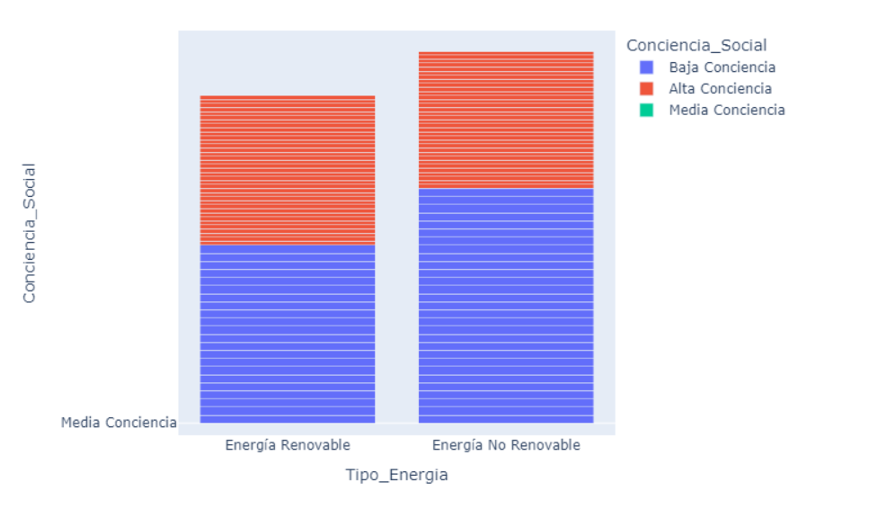

Resultados
Tabla con el resumen numérico de las variables cuantitativas.
Tabla de Resumen de Datos:
| Estadisticos |
Emisiones_CO2 |
Deforestación |
Uso_Energía |
Inversión_Renovable |
| count |
200.00000 |
200.000000 |
200.000000 |
200.000000 |
| mean |
23640.74500 |
3687.890000 |
51684.26000 |
2312.770000 |
| std |
16591.23778 |
2811.579857 |
30068.77647 |
1455.800751 |
| min |
1425.00000 |
117.000000 |
1762.00000 |
24.000000 |
| 25% |
7739.00000 |
1159.000000 |
25647.25000 |
957.750000 |
| 50% |
22487.50000 |
3202.000000 |
50349.50000 |
2383.500000 |
| 75% |
39453.25000 |
5662.250000 |
80979.75000 |
3603.500000 |
| max |
49825.00000 |
9821.000000 |
99208.00000 |
4996.000000 |
| IQR |
31714.25 |
4503.25 |
55332.5 |
2645.75 |
| cv |
70.18068923119318 |
76.23817026458381 |
58.17782139125851 |
62.94619658976644 |
| skewness |
0.08753333217256302 |
0.5842066095551393 |
-0.007226339864886639 |
0.09932145553145648 |
Resumen numerico de Emisiones de CO2 por politica ambiental
| Politica Ambiental |
count |
mean |
std |
min |
25% |
50% |
75% |
max |
cv |
skewness |
| Alta regulacion |
78.0 |
22444.358974 |
16808.330707 |
1646.0 |
6597.5 |
14283.5 |
38962.00 |
49825.0 |
0.748889 |
0.173700 |
| Baja regulacion |
60.0 |
23443.333333 |
17111.530334 |
1425.0 |
7275.0 |
22668.0 |
40277.25 |
49381.0 |
0.729910 |
0.123360 |
| Moderada regulacion |
62.0 |
25336.919355 |
15918.185043 |
2059.0 |
11342.5 |
31383.0 |
39870.25 |
49496.0 |
0.628260 |
-0.037326 |
Resumen numerico del uso de energía por conciencia social
| Conciencia social |
count |
mean |
std |
min |
25% |
50% |
75% |
max |
cv |
skewness |
| Alta conciencia |
71.0 |
48257.239437 |
28333.010691 |
2702.0 |
25853.0 |
47114.0 |
72416.0 |
98177.0 |
0.587125 |
0.110873 |
| Baja conciencia |
51.0 |
53765.666667 |
31642.574274 |
1762.0 |
24929.0 |
56620.0 |
81047.5 |
98029.0 |
0.588528 |
-0.272171 |
| Moderada conciencia |
78.0 |
53442.807692 |
30657.370434 |
4587.0 |
25853.0 |
48846.5 |
85579.0 |
99208.0 |
0.573648 |
0.041301 |
Tabla de frecuencia para las variables cuantitativas
Tabla de frecuencia para las emisiones de CO2
| Intervalo |
Frecuencia |
Frecuencia Relativa |
Frecuencia Acumulada |
Frecuencia Relativa Acumulada |
| [1425.0, 7475.0) |
48 |
0.240 |
48 |
0.240 |
| [7475.0, 13525.0) |
41 |
0.205 |
89 |
0.445 |
| [13525.0, 19575.0) |
11 |
0.055 |
100 |
0.500 |
| [19575.0, 25625.0) |
0 |
0.000 |
100 |
0.500 |
| [25625.0, 31675.0) |
12 |
0.060 |
112 |
0.560 |
| [31675.0, 37725.0) |
28 |
0.140 |
140 |
0.700 |
| [37725.0, 43775.0) |
31 |
0.155 |
171 |
0.855 |
| [43775.0, 49825.0) |
28 |
0.140 |
199 |
0.995 |
Distribución de Frecuencias: Deforestación
| Intervalo |
Frecuencia |
Frecuencia Relativa |
Frecuencia Acumulada |
Frecuencia Relativa Acumulada |
| [117.0, 1330.0) |
56 |
0.280 |
56 |
0.280 |
| [1330.0, 2543.0) |
32 |
0.160 |
88 |
0.440 |
| [2543.0, 3756.0) |
23 |
0.115 |
111 |
0.555 |
| [3756.0, 4969.0) |
28 |
0.140 |
139 |
0.695 |
| [4969.0, 6182.0) |
19 |
0.095 |
158 |
0.790 |
| [6182.0, 7395.0) |
10 |
0.050 |
168 |
0.840 |
| [7395.0, 8608.0) |
19 |
0.095 |
187 |
0.935 |
| [8608.0, 9821.0) |
12 |
0.060 |
199 |
0.995 |
Distribución de Frecuencias: Uso de Energía
| Intervalo |
Frecuencia |
Frecuencia Relativa |
Frecuencia Acumulada |
Frecuencia Relativa Acumulada |
| [1762.0, 13942.75) |
30 |
0.150 |
30 |
0.150 |
| [13942.75, 26123.5) |
22 |
0.110 |
52 |
0.260 |
| [26123.5, 38304.25) |
26 |
0.130 |
78 |
0.390 |
| [38304.25, 50485.0) |
22 |
0.110 |
100 |
0.500 |
| [50485.0, 62665.75) |
20 |
0.100 |
120 |
0.600 |
| [62665.75, 74846.5) |
21 |
0.105 |
141 |
0.705 |
| [74846.5, 87027.25) |
31 |
0.155 |
172 |
0.860 |
| [87027.25, 99208.0) |
27 |
0.135 |
199 |
0.995 |
Distribución de Frecuencias: Inversión en Energía Renovable
| Intervalo |
Frecuencia |
Frecuencia Relativa |
Frecuencia Acumulada |
Frecuencia Relativa Acumulada |
| [24.0, 645.5) |
36 |
0.180 |
36 |
0.180 |
| [645.5, 1267.0) |
22 |
0.110 |
58 |
0.290 |
| [1267.0, 1888.5) |
32 |
0.160 |
90 |
0.450 |
| [1888.5, 2510.0) |
16 |
0.080 |
106 |
0.530 |
| [2510.0, 3131.5) |
29 |
0.145 |
135 |
0.675 |
| [3131.5, 3753.0) |
26 |
0.130 |
161 |
0.805 |
| [3753.0, 4374.5) |
19 |
0.095 |
180 |
0.900 |
| [4374.5, 4996.0) |
19 |
0.095 |
199 |
0.995 |
Figura 1: Histograma de las Emisiones de CO2.

Figura 2: Histograma de la Deforestación.
Figura 3: Histograma del Uso de Energía.
Figura 4: Histograma de la Inversión en Energía Renovable.
Figura 5: Histograma por Tipo de Energía.
Figura 6: Histograma de las Políticas Ambientales.
Figura 7: Histograma de la Conciencia Social.
Figura 8: Gráfico de cajas de las Emisiones de CO2.
Figura 9: Gráfico de cajas de la Deforestación.
Figura 10: Gráfico de cajas de la Inversión en Energía Renovable.
Figura 11: Gráfico de cajas del Uso de Energía.
Figura 11: Gráfico de las emisiones de CO2 por Politica Ambiental.
Distribución de Política Ambiental por Tipo de Energía
| Tipo de Energía |
Alta Regulación |
Baja Regulación |
Moderada Regulación |
| Energía No Renovable |
37 |
30 |
33 |
| Energía Renovable |
41 |
30 |
29 |
| Total |
78 |
60 |
62 |
Distribución de Conciencia Social por Tipo de Energía
| Tipo de Energía |
Alta Conciencia |
Baja Conciencia |
Media Conciencia |
| Energía No Renovable |
34 |
29 |
37 |
| Energía Renovable |
37 |
22 |
41 |
| Total |
71 |
51 |
78 |
Política Ambiental por Tipo de Energía
| Política Ambiental |
Energía No Renovable |
Energía Renovable |
Total |
| Alta Regulación |
37 |
41 |
78 |
| Baja Regulación |
30 |
30 |
60 |
| Moderada Regulación |
33 |
29 |
62 |
| Total |
100 |
100 |
200 |
Distribución de Conciencia Social por Política Ambiental
| Conciencia Social |
Alta Regulación |
Baja Regulación |
Moderada Regulación |
Total |
| Alta Conciencia |
33 |
23 |
15 |
71 |
| Baja Conciencia |
21 |
11 |
19 |
51 |
| Media Conciencia |
24 |
26 |
28 |
78 |
| Total |
78 |
60 |
62 |
200 |
Conciencia Social por Tipo de Energía
| Conciencia Social |
Energía No Renovable |
Energía Renovable |
Total |
| Alta Conciencia |
34 |
37 |
71 |
| Baja Conciencia |
29 |
22 |
51 |
| Media Conciencia |
37 |
41 |
78 |
| Total |
100 |
100 |
200 |
Figura 12: Diagrama de barras de política ambiental por conciencia social
Figura 13: Diagrama de barras de política ambiental por tipo de energía

Figura 14: Diagrama de barras de tipo de energía por conciencia social
Figura 15: Diagrama de barras de tipo de energía por política ambiental
Tabla de correlacion de variables numericas
| Variables |
Emisiones_CO2 |
Deforestacion |
Uso_Energia |
Inversion_Renovable |
| Emisiones_CO2 |
1.000000 |
0.007619 |
0.830354 |
-0.098919 |
| Deforestacion |
0.007619 |
1.000000 |
0.049859 |
0.017638 |
| Uso_Energia |
0.830354 |
0.049859 |
1.000000 |
-0.055878 |
| Inversion_Renovable |
-0.098919 |
0.017638 |
-0.055878 |
1.000000 |
Conclusiones
El análisis numérico de las variables cuantitativas relacionadas con el cambio climático revela varias tendencias importantes:
1.Emisiones de CO2: La media de las emisiones de CO2 es de 23,640.75 unidades, con una desviación estándar de 16,591.24. La distribución de las emisiones muestra una ligera asimetría positiva (skewness de 0.09), indicando que hay algunos valores extremadamente altos. La variabilidad relativa (coeficiente de variación) es del 70.18%, lo que sugiere una alta dispersión en los datos.
2. Deforestación: La media de la deforestación es de 3,687.89 unidades, con una desviación estándar de 2,811.58. La distribución es asimétrica positiva (skewness de 0.58), lo que indica la presencia de valores altos extremos. El coeficiente de variación es del 76.24%, mostrando una alta variabilidad en los datos.
3. Uso de Energía: La media del uso de energía es de 51,684.26 unidades, con una desviación estándar de 30,068.78. La distribución es casi simétrica (skewness de -0.01), lo que sugiere una distribución equilibrada de los datos. El coeficiente de variación es del 58.18%, indicando una moderada dispersión.
4. Inversión en Energía Renovable: La media de la inversión en energía renovable es de 2,312.77 unidades, con una desviación estándar de 1,455.80. La distribución es ligeramente asimétrica positiva (skewness de 0.10). El coeficiente de variación es del 62.95%, mostrando una dispersión moderada.
5. Política Ambiental: Las emisiones de CO2 varían según el nivel de regulación ambiental. Las políticas de alta regulación tienen una media de emisiones de 22,444.36 unidades, mientras que las de baja y moderada regulación tienen medias de 23,443.33 y 25,336.92 unidades, respectivamente. La variabilidad es mayor en las políticas de alta regulación (cv de 0.75) en comparación con las de baja y moderada regulación.
6. Conciencia Social: El uso de energía también varía según el nivel de conciencia social. Las regiones con alta conciencia social tienen un uso medio de energía de 48,257.24 unidades, mientras que las regiones con baja y moderada conciencia tienen usos medios de 53,765.67 y 53,442.81 unidades, respectivamente. La variabilidad es similar en todos los niveles de conciencia social.
7. Correlaciones: Las emisiones de CO2 están altamente correlacionadas con el uso de energía (correlación de 0.83), lo que sugiere que a mayor uso de energía, mayores son las emisiones de CO2. La deforestación y la inversión en energía renovable tienen correlaciones bajas con las demás variables, indicando que estos factores no están fuertemente relacionados con las emisiones de CO2 o el uso de energía.
Las políticas de alta regulación ambiental muestran una media de emisiones de CO2 de 22,444.36 unidades, con una desviación estándar de 16,808.33. La variabilidad relativa (cv) es de 0.75, y la asimetría (skewness) es de 0.17, indicando una ligera tendencia hacia valores más altos.
Las políticas de baja regulación tienen una media de emisiones de CO2 de 23,443.33 unidades, con una desviación estándar de 17,111.53. El coeficiente de variación es de 0.73, y la asimetría es de 0.12, indicando una distribución ligeramente sesgada hacia valores más altos.
Las políticas de moderada regulación presentan una media de emisiones de CO2 de 25,336.92 unidades, con una desviación estándar de 15,918.19. El coeficiente de variación es de 0.63, y la asimetría es de -0.04, sugiriendo una distribución casi simétrica.
En general, las políticas de alta y baja regulación ambiental tienen medias de emisiones de CO2 relativamente similares, pero la alta regulación muestra una mayor variabilidad en las emisiones. Las políticas de moderada regulación tienen una media de emisiones ligeramente superior, pero con menor variabilidad y una distribución más equilibrada. La alta variabilidad en las políticas de alta y baja regulación sugiere que, aunque las políticas estrictas pueden reducir las emisiones en algunos casos, no siempre son consistentes en su efectividad. La menor variabilidad en las políticas de moderada regulación podría indicar un enfoque más equilibrado y posiblemente más sostenible a largo plazo.
Las regiones con alta conciencia social tienen un uso medio de energía de 48,257.24 unidades, con una desviación estándar de 28,333.01. La variabilidad relativa (cv) es de 0.59, y la asimetría (skewness) es de 0.11, indicando una distribución ligeramente sesgada hacia valores más altos.
Las regiones con baja conciencia social tienen un uso medio de energía de 53,765.67 unidades, con una desviación estándar de 31,642.57. El coeficiente de variación es de 0.59, y la asimetría es de -0.27, indicando una distribución ligeramente sesgada hacia valores más bajos.
Las regiones con moderada conciencia social tienen un uso medio de energía de 53,442.81 unidades, con una desviación estándar de 30,657.37. El coeficiente de variación es de 0.57, y la asimetría es de 0.04, sugiriendo una distribución casi simétrica.
En general, el uso de energía varía según el nivel de conciencia social. Las regiones con alta conciencia social tienden a tener un uso de energía ligeramente menor y una distribución más equilibrada en comparación con las regiones de baja y moderada conciencia social. La variabilidad es similar en todos los niveles de conciencia social, lo que sugiere que la conciencia social puede influir en el uso de energía, pero otros factores también juegan un papel importante.
En resumen, el análisis numérico destaca la importancia de las políticas ambientales y la conciencia social en la gestión de las emisiones de CO2 y el uso de energía. Las políticas de alta regulación y una mayor conciencia social parecen estar asociadas con menores emisiones y un uso más eficiente de la energía.
Interpretaciones de las Tablas de Frecuencia
Emisiones de CO2: La mayoría de las emisiones de CO2 se concentran en los intervalos más bajos, con un 44.5% de las observaciones acumuladas hasta el segundo intervalo ([7475.0, 13525.0)). Esto sugiere que la mayoría de los países tienen emisiones relativamente bajas, aunque hay una minoría significativa con emisiones mucho más altas.
Deforestación: La deforestación muestra una distribución más dispersa, con un 28% de las observaciones en el primer intervalo ([117.0, 1330.0)) y una acumulación gradual en los intervalos siguientes. Esto indica que la deforestación varía ampliamente entre los países.
Uso de Energía: El uso de energía está más concentrado en los intervalos medios y altos, con un 50% de las observaciones acumuladas hasta el cuarto intervalo ([38304.25, 50485.0)). Esto sugiere que muchos países tienen un uso de energía moderado a alto.
Inversión en Energía Renovable: La inversión en energía renovable está más concentrada en los intervalos más bajos, con un 45% de las observaciones acumuladas hasta el tercer intervalo ([1267.0, 1888.5)). Esto indica que la mayoría de los países invierten relativamente poco en energía renovable, aunque hay algunos con inversiones significativamente mayores.
Análisis Univariado y Bivariado para Variables Cualitativas
Distribución de Política Ambiental por Tipo de Energía: La mayoría de las políticas ambientales de alta regulación se aplican a la energía renovable (41 casos), mientras que la energía no renovable tiene 37 casos de alta regulación. Esto sugiere un enfoque más estricto en la regulación de la energía renovable.
Distribución de Conciencia Social por Tipo de Energía: La alta conciencia social es más frecuente en la energía renovable (37 casos) en comparación con la energía no renovable (34 casos). Esto indica una mayor conciencia social en el uso de energías renovables.
Política Ambiental por Tipo de Energía: Las políticas de alta regulación son más comunes en la energía renovable (41 casos) que en la energía no renovable (37 casos). Las políticas de baja y moderada regulación están distribuidas de manera similar entre ambos tipos de energía.
Distribución de Conciencia Social por Política Ambiental: La alta conciencia social es más común en las políticas de alta regulación (33 casos), seguida por las políticas de moderada regulación (28 casos) y baja regulación (23 casos). Esto sugiere que una mayor regulación ambiental está asociada con una mayor conciencia social.
Distribución de Conciencia Social por Política Ambiental: La alta conciencia social es más común en las políticas de alta regulación (33 casos), seguida por las políticas de moderada regulación (28 casos) y baja regulación (23 casos). Esto sugiere que una mayor regulación ambiental está asociada con una mayor conciencia social.